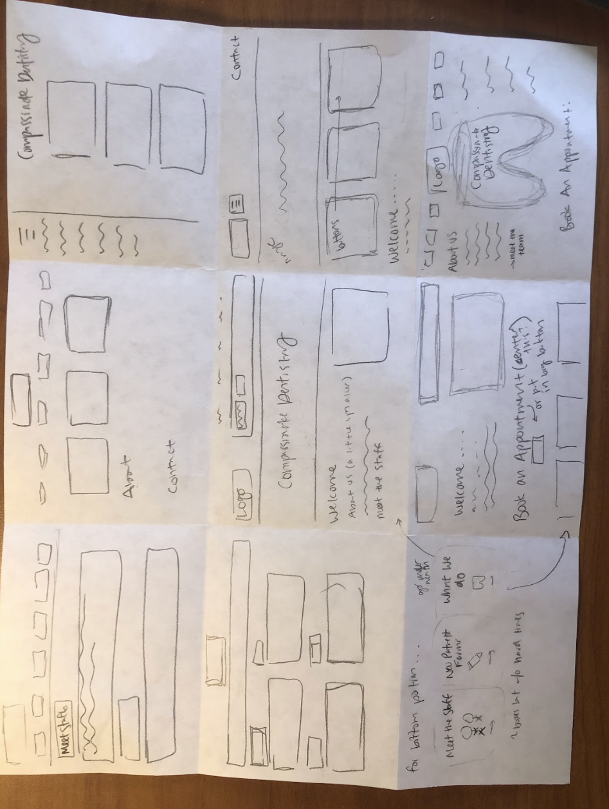
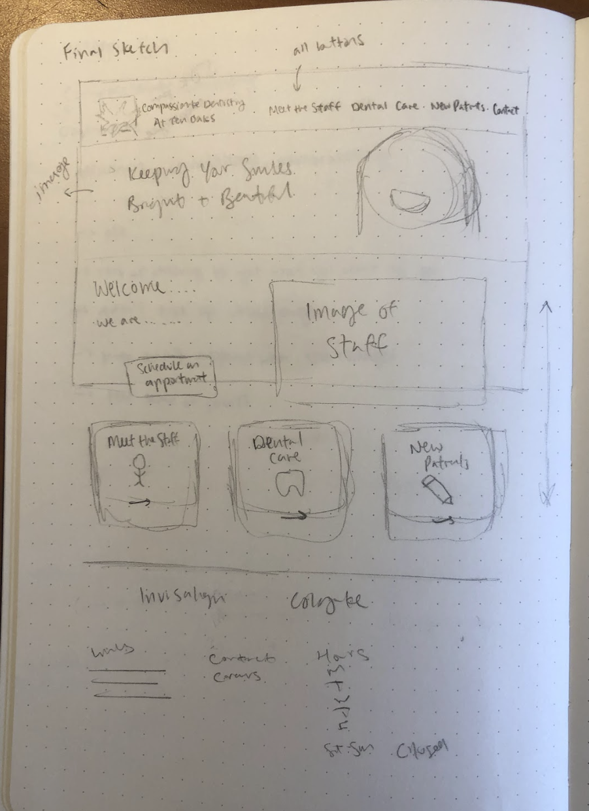
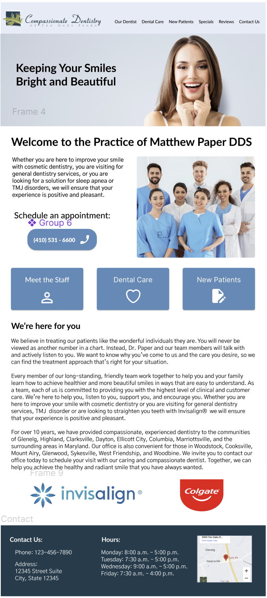
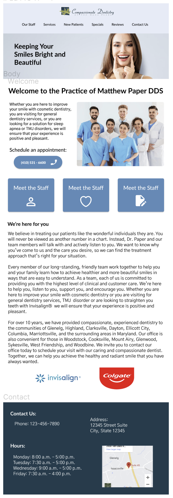

Usability Problems
First, I chose the website that I wanted to design. I chose this
dentistry website because it is an important tool for people who
are looking for a dentistry or who are looking to find out more
information from their current dentistry. Having easy to use,
accessible interfaces is vital for websites pertaining to
medecine.
However, this site looks outdated which will discourage some users
from looking further into this dentistry. In addition, the site
doesn’t respond well to page size changes and doesn’t have a
mobile view which alienates many users from being able to use it.
Finally, this site does not utilize the full space of the page and
has small text, which makes it hard to read and engage with.
See below for the link to the original site:
Sketches
To prepare to redesign this website, I first did an activity called speed sketching where I divided a sheet of paper into 9 squares. Over the course of 9 minutes, I created 9 possible redesigns. This process allowed me to brainstorm without worrying about if each design is fleshed-out enough; rather, I was able to play with different formats and ideas and see what I liked for when putting together my final sketch and wireframe. Using the ideas generated from speed sketching, I created my final sketch which I then based my wireframes off of.
Speed Sketches
Final Sketch
Low-Fidelity Prototyping
Next, I created low-fidelity wireframes: one for desktop, one for tablet, and one for mobile. In addition, I annotated each wireframe to specify why I made each change or why I kept things the same as the original site. The most notable changes I made were ensuring that the content took up the full width of the page and creating a view specifically for mobile, both of which the original site did not do.
Style Guide
After creating low-fidelity wireframes, I began to put together a style guide for the website redesign. I knew that I wanted to give the website a similar feel to the original site. To do this, I took into account the logo colors and website colors while also making new choises for font, icons, and some other colors.
- I used the green and dark blue from the logo as part of my color palette then added white. I used a color palette generator to put together a light shade of blue and a medium shade of blue to create the full palette.
- For the fonts, I chose Lato and Gothic A1 for their simplicity and readability.
- I used Font Awesome for my icon library, which allowed me to find icons that fit the function of each of the buttons in this website.
- Initially, I had chosen a lighter blue for the main blue color of this redesign, but through testing with WEBAIM, I learned that there was not enough contrast, so I changed the style guide to reflect a deeper shade of blue that allows for better contrast when white text is on it.
High-Fidelity Mockup
After creating a style guide, I created three high-fidelity mockups based on my wireframes for desktop, tablet, and mobile. When creating the website in HTML and CSS, I used these mockups and the style guide for guidance and reference.
Desktop High Fidelity Mockup
Tablet High Fidelity Mockup
Mobile High Fidelity Mockup


HTML/CSS
Below is linked the responsive redesign for Compassionate Dentistry:
https://helium-balloon.github.io/dentistry-responsive-redesign/Conclusion
Throughout this process, I learned the full workflow of creating a
redesign for a website, from brainstorming to a final front-end
product. This process taught me the importance of and skills for
designing with a user in mind, applying design principles, and coding
a responsive site.
For this site in particular because it
relates to healthcare, having a clear website that works on a variety
of devices is extremely important to reach as many people as possible.
By incorporating features such as contrasting colors, HTML5 semantic
elements, and descriptive alt tags for images, my redesign aims to
enhance user experience and ensure that the site is accessible to a
diverse audience.
The skills acquired during this project
are vital going forward to allow me to confidently approach any future
project and have a comprehensive understanding of how the elements of
the design process help to produce effective outcomes.